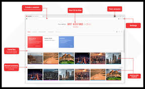

Existen varias plataformas que permiten el acceso remoto entre PCs. A continuación, te presentamos dos de las más populares:
TeamViewer
TeamViewer es una de las herramientas de acceso remoto más conocidas. Permite realizar conexiones rápidas y seguras entre PCs, transferir archivos, realizar soporte técnico y mucho más. Es ampliamente utilizado en el ámbito empresarial y personal.

AnyDesk
AnyDesk es otra plataforma muy popular para el acceso remoto. Ofrece un rendimiento rápido y confiable, incluso en conexiones de red de baja velocidad. Es ideal para soporte técnico, trabajo colaborativo y acceso a escritorios de forma remota.